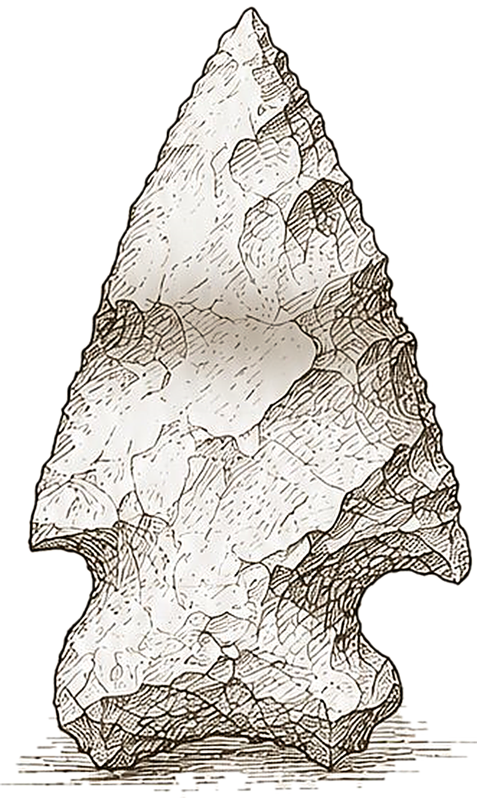

Requesting GPS…
Sites
Clear
Import
Export
Sign out
Tap to add boundary points. Tap the first point to close the polygon.
Cancel
Erase & Restart
Drag corners to reshape. Tap an edge to add a corner. Long-press a corner to remove it.
Cancel
Erase & Restart
Save
Site:
All Sites
Start Hunt
No Evidence
--
Evidence
--
Find
--
Confirm
Cancel
OK
Site name
Cancel
Save
Enable Compass
KnapScout uses your phone's compass to show which way you're facing in the field. Tap below to enable.
Enable Compass
Knap
Scout
Field Survey

Corner-Notched Kirk
·
Early Archaic
Tap to enter
Knap
Scout
Field Survey · Sign in
Email
Send my code
6-digit code
Sign in
Didn’t get it?
Resend